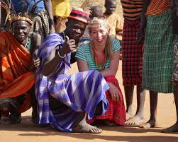
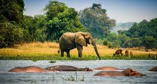

GEOGRAPHY
Uganda is a beautiful country in East Africa with green hills, lakes and rivers it is home to lake victoria, the river nile and the snow capped mountains it is located along the equator which gives it a warm climate all year round
Lake Victoria is the largest lake in Afica and the seacond largest freshwater lake in the world it boarders Uganda Kenya and Tanzania it's main source of the nile the longest river in the world

The river nile starts it's journey from Jinja Uganda where it flows out of lake Victoria it is the longest river in the world stretching about 6650km to Egypt and Mediterranean sea

The Rwenzori Mountains are located in Western Uganda along the border with the Democratic Republic of Crongo they are often called the "Mountains of the moon" the highest peak rises to about 5109 meters making it the third highest in Africa the mountains are permanantly snow capped

SOCIETIES AND CULTURE
Uganda has many tribes including Baganda, Banyankole, and Acholi among others eath has unique customs, and traditional food that make Uganda's culture rich and colorful most ugandans live in rual areas and depend on farming they are warm and welcoming people who value community and hospitality
WILDLIFE
Uganda is one of Africa's top wildlife destinations. the country is home to elephants, lions, giraffs, zebras, hippos and over 1000 species of birds the country is also famous for its mountain gorillas found in bwandi and mgahinga national park other national parks include Queen Elizabeth national park, Murchion falla national park and Kidepo Valley where visitors can enjoy safaris and breathtaking scenary
